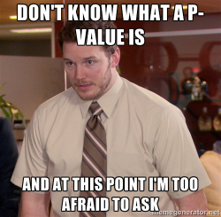

Welcome to PSYC 350 Laboratory
Lab 1 & 2
Lab Instructor
Emma Marshall, JD, MA
- Law-Psychology (Joint JD/PhD) Program
- Studies legal decision-making

Today’s Tasks
- Brief Introduction: The Purpose of Lab
- Overview of where to find lab materials
- Today’s lab:
- Introduction to final project datasets
- Introduction to SPSS
Why is this course required?
“Psych majors” vs. “Psych professionals” distinction is about ability to GENERATE and EVALUATE new knowledge
Creating Knowledge
Evaluate Knowledge

Possible Question- “Why is this course required???”
The fundamental difference between “Psych majors” and “Psych professionals” is the ability to GENERATE and EVALUATE new knowledge
To do your job, you’ll have to know to find and evaluate knowledge that others have generated! You will sometimes have to generate new knowledge so you can do your job!
The importance of empirical research…
- Informs decisions and activities across industries and professions
- Psychologists (clinicians) use research to make key diagnosis & treatment decisions
- Peer-review and replication processes provide credibility & ensure ethical or legal compliance
- Not limited to psychology
- e.g., HR, criminal justice, business, education, engineering all depend on and use psychological knowledge
The importance of empirical research is that it- - Informs every decision and action by professionals - Every decision and action made by psychological professionals is dependent upon research – maybe their own, probably someone else’s. - In order to be ethical (also legal and bill-able), each diagnosis, treatment choice, evaluation, and decision to stop treatment must be defended in terms of replicated, peer-reviewed, published research. - Not just clinical/treatment decisions but those made within areas of human resources, criminal justice, business, education, engineering, etc. – all depend on, and use, knowledge acquired by psychological researchers.
Evaluating Knowledge
Not everyone produces empirical research…
But ALL psychology professionals need to be skilled consumers of research!

Evaluating Knowledge
Competent Research Consumers can…
- Find relevant research
- Evaluate (& critique) research quality (theory, methods, stats)
- Apply (& integrate) valuable research information to own work
While not everyone needs to be a producer of empirical research, every psychological professional needs to be a competent consumer of research. Being a competent consumer of research means being able to … - locate research that is relevant to your work - critique (evaluate) the quality of the research (theory, methodology, & stats) - integrate the useful information (that passes your evaluation) from the research into your own work
Example
“In the decade preceding the pandemic, the mean IQ score on standardized tests for children aged between three months and three years of age hovered around 100, but for children born during the pandemic that number tumbled to 78, according to the analysis, which is yet to be peer-reviewed.” -Beth Morling, www.everydayresearchmethods.com
What might be some problems with this headline? Not peer reviewed. What about the pandemic might have changed the experiences and testing environment for babies?
Creating Knowledge
Most jobs (not just academia) require skills related to producing research and knowledge
Funding sources, clients & employers need evidence of what works and what doesn’t…
Evidence-based decision-making
Efficiency and cost related concerns
Competitive advantage
Most people (not just those in academia) find that they do need to produce research to do their jobs …
Why?
Funding sources, clients, & bosses need evidence that what you are doing “works” and is “worth the expense”.
It is not enough that you “do it better” than the others. You need evidence that what you’re doing works, and that it works better than your competitors.
This evidence comes from research conducted, analyzed, and reported by you using your own patients/clients.
The point is…
- Research skills are needed for various professional activities and success
- If you understand the research process and can evaluate, integrate, and apply empirical research you will have:
- Better job prospects
- Improved job performance
- More job flexibility!
- If you understand the research process and can evaluate, integrate, and apply empirical research you will have:
The point is…Research is going to be a more important part of your ongoing professional activities (and your successes) than you may realize.
Professionals who better understand the research process and know how to evaluate, integrate, and apply the results from empirical research have greater employment potential do their jobs better!
Psychology is competitive!
- “Helping” professions are attractive and appealing
- Positions often require advanced degrees
- Clinical Program accepts 10-12 of 200+ applicants
- Law-Psych accepts 4-5 of 60 applicants
- Ed Psych Counseling program accepts 6-8 of 100+ applicants
The psychological professions are competitive… for multiple reasons!!!
- Many want jobs that “Helping people” is seen by many as an extension of their concerns for individuals and our society, so many want to become psychological professionals
Positions for all of these are extremely competitive and required advanced degrees – and those advanced degree programs are also extremely competitive… For example…
Positions for all of these are extremely competitive and required advanced degrees – some examples, each year …
Our graduate Clinical Psychology Program accepts 10-12 of the 200+ applicants
Our Law-Psychology graduate program accepts 4-5 of 60 applicants
The Educational Psychology Counseling program takes 6-8 of 100+
And within those programs – the number of jobs available after also vary by industry and other factors.
So, what does this mean?
Schools (& employers) look for:
Excellent performance in research methods/stats courses
Excellent performance in 400-level courses (writing & critical thinking skills)
Research experience
So, we’re here to pursue those activities together during your undergraduate “career” to increase your ability to compete for graduate school or a job.
What do schools & employers look for ??
Excellent performance in research methods/stats courses
Excellent performance in 400-level courses, especially writing and critical thinking skills (which can be improved using the knowledge and skills you’ll have an opportunity to learn in here)
Research experience (which will be easier to find if you do well in here and have the resultant skills)
Summary
Why is this course required?
- Research skills are at the heart of psychological practice
- Needed to succeed in upper level psych courses
- & to succeed in most related careers and industries

- Because research is at the heart of Psychological practice
- - Because the best way to get the education and training you need for your desired career is to master the procedures, techniques, skills, and tricks you will learn in this course.
- Every assignment done in this class tracks directly to knowledge and skills that will be expected to perform in 300/400-level classes FYI: advanced courses in this topic (Psyc 491/2)
Useful skills you’ll acquire…
- Learn to locate, summarize, critique, and integrate primary research and research reviews
- Learn to propose original research hypotheses based on your consideration of previous research
- Learn to plan the procedures and materials for data collection and analysis relevant to research hypotheses
- Learn to report all of the above using a standard (i.e., APA) format and style
Useful skills you’ll acquire in this course: Learn to locate, summarize, critique, and integrate primary research and research reviews Learn to propose original research hypotheses based on your consideration of previous research Learn to plan the procedures and materials for data collection and analysis relevant to research hypotheses Learn to report all of the above using a standard (i.e., APA) format and style
Keep in Mind
You need a “C” (not a “C-”) for this course to count toward the Psychology Major
You must complete all exams to receive a passing grade in this course
You must complete all the take-home laboratory assignments to receive a passing grade in this class
You must complete the research participation assignment to receive a passing grade in this class
Don’t freak out!


Questions?
Lab 1 & 2 Activities
Operationalization
Operational definition – how will you measure it?
- Spells out precisely how the concept will be measured
Operationalize
Describing the steps, procedures & concepts used to identify and measure variables
How to define the variables within the language of research?
How to measure/observe those variables?
- Often look to what others have done
Measurement: Assigning numbers or labels to units of analysis in order to represent the conceptual properties
Operationalize: Herbie Husker
Qualtitative vs. Quantitative Variables
All observations are qualitative at the outset
- Qualitative: Nonnumerical
- Quantitative: Numerical
- Both are useful and legitimate
- Can choose based on topic or combine aspects of both
Quantitative Variables
Discrete vs. Continuous
- You count discrete data
- You measure continuous data
Discrete data
Continuous data
Example: Survivor
Confessionals = discrete data


What is Discrete Data? Discrete variables can only assume specific values that you cannot subdivide. Typically, you count them, and the results are integers. For example, if you work at an animal shelter, you’ll count the number of cats.
Discrete data can only take on specific values. For example, you might count 20 cats at the animal shelter. These variables cannot have fractional or decimal values. You can have 20 or 21 cats, but not 20.5! Natural numbers have discrete values.
Examples of discrete data include The number of books you check out from the library. The number of heads in a sequence of coin tosses. The result of rolling a die. The number of patients in a hospital. The population of a country.
IMDB Rating = Continuous

What is Continuous Data? Continuous variables can assume any numeric value and can be meaningfully split into smaller parts. Consequently, they have valid fractional and decimal values. In fact, continuous data have an infinite number of potential values between any two points. Generally, you measure them using a scale.
When you see decimal places for individual values, you’re looking at a continuous variable.
Examples of continuous data include weight, height, length, time, and temperature.
Lab 1 & 2 Activities
Operationalization
Operational definition – how will you measure it?
- Spells out precisely how the concept will be measured
Operationalize
Describing the steps, procedures & concepts used to identify and measure variables
How to define the variables within the language of research?
How to measure/observe those variables?
- Often look to what others have done
Measurement: Assigning numbers or labels to units of analysis in order to represent the conceptual properties
Operationalize: Herbie Husker
Qualtitative vs. Quantitative Variables
All observations are qualitative at the outset
- Qualitative: Nonnumerical
- Quantitative: Numerical
- Both are useful and legitimate
- Can choose based on topic or combine aspects of both
Quantitative Variables
Discrete vs. Continuous
- You count discrete data
- You measure continuous data
Discrete data
Continuous data
Example: Survivor
Confessionals = discrete data
What is Discrete Data? Discrete variables can only assume specific values that you cannot subdivide. Typically, you count them, and the results are integers. For example, if you work at an animal shelter, you’ll count the number of cats.
Discrete data can only take on specific values. For example, you might count 20 cats at the animal shelter. These variables cannot have fractional or decimal values. You can have 20 or 21 cats, but not 20.5! Natural numbers have discrete values.
Examples of discrete data include The number of books you check out from the library. The number of heads in a sequence of coin tosses. The result of rolling a die. The number of patients in a hospital. The population of a country.
IMDB Rating = Continuous
What is Continuous Data? Continuous variables can assume any numeric value and can be meaningfully split into smaller parts. Consequently, they have valid fractional and decimal values. In fact, continuous data have an infinite number of potential values between any two points. Generally, you measure them using a scale.
When you see decimal places for individual values, you’re looking at a continuous variable.
Examples of continuous data include weight, height, length, time, and temperature.